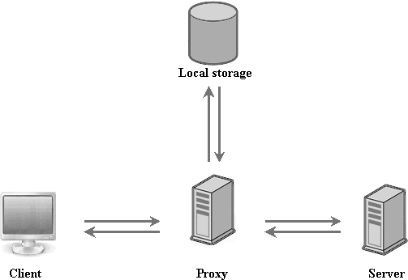

dhx.proxy: offline storage
What is dhx.proxy?
dhx.proxy is a DHTMLX component allowing you to send web requests via the proxy object. It defines a 'medium' data storage (cookie, session or local) that will keep the latest successful data files (further referred as 'the latest copy') and unsuccessful web requests.

What components can dhx.proxy be used with?
How does an application with dhx.proxy work?
Loading data
- Each time data needs loading, the app passes a request to the server via proxy-server. If the server is available - data is loaded from it and cached as the latest copy. If the server is unavailable, data is loaded from the local storage.
- Note that the local storage will contain some data only if the app has been run before with the available internet connection at least once.
CRUD operations
- When a user makes a request on update, it (the request) is passed to the server via proxy-server. If the request is satisfied - it updates the latest copy. If the request isn't satisfied - it's cached in the local storage.
- Each time a user makes a request, dhx.proxy checks presence of unsuccessful requests in the local storage. If there are any kept - they are passed to the server.
- As soon as an unsuccessful request is satisfied - it updates the latest copy and the latest copy is removed from the local storage.
How to use dhx.proxy?
dhx.proxy is an easy-to-use component. All you need to do is to instantiate it and specify the instance as the url parameter of the component(s) that will take data from the server.
var source = new dhx.proxy({ url: "./data.php", storage: dhx.storage.cookie }); mygrid = new dhtmlXGridObject('gridbox'); ... mygrid.load(source);
Initialization
dhx.proxy can be initialized in the following way:
var source = new dhx.proxy({ url: "./data.php", storage: dhx.storage.session });
The constructor takes 2 parameters:
- url - (url) the datafeed url. If you use dhtmlxConnector, the path to its file can be set as this parameter.
- storage - (dhx.storage.local, dhx.storage.session, dhx.storage.cookie) specifies the data storage type. It's an optional parameter. The default value - dhx.storage.local.
dhx.proxy and dhx.DataProcessor
If for connecting to the server you use dataProcessor, you should specify the dhx.proxy instance in the constructor. After this, all web requests start to be passed to the server through proxy.
var source = new dhx.proxy({ url: "./data.php", storage: dhx.storage.cookie }); mygrid = new dhtmlXGridObject('gridbox'); ... mygrid.load(source); myDataProcessor = new dataProcessor(source); myDataProcessor.init(mygrid);
dhx.proxy and Ajax
In case you don't use dataProcessor and 'write' the server-client logic manually, you will need these 2 methods:
- post
- get
The methods work like normal Ajax GET and POST requests.
var source = new dhx.proxy({ url: "./data.php", storage: dhx.storage.cookie }); mygrid = new dhtmlXGridObject('gridbox'); .... mygrid.load(source); var params = ["a=1", "b=2"]; // request parameters list source.post( params.join('&'), { success: function() { moveItem(id, $$('mylist'), $$('ready_list')); }, error: function() { moveItem(id, $$('mylist'), $$('proxy_list')); } });
Learning in practice
To make it easy to learn the topic, you can go through step-by-step tutorial - Making apps work offline.
As you follow the tutorial, you will create a simple grid linked to db that continues to run and be updated even when the app doesn't have connection to Internet.